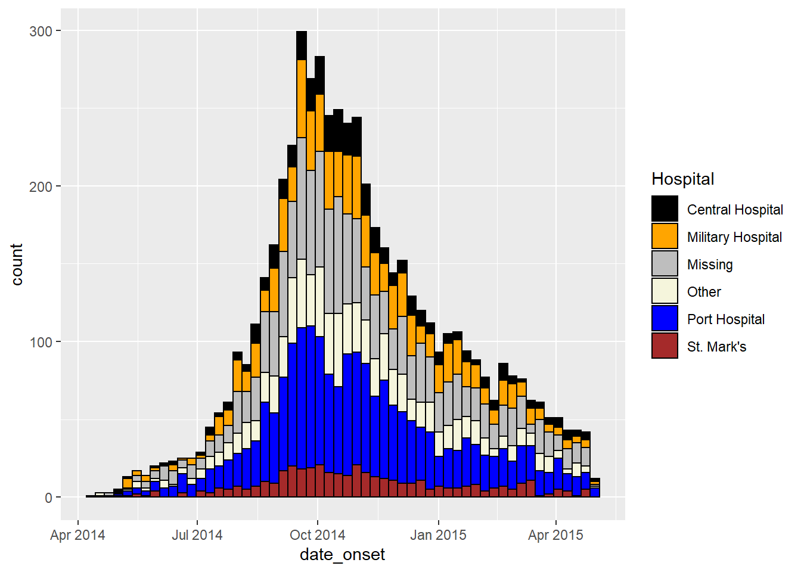
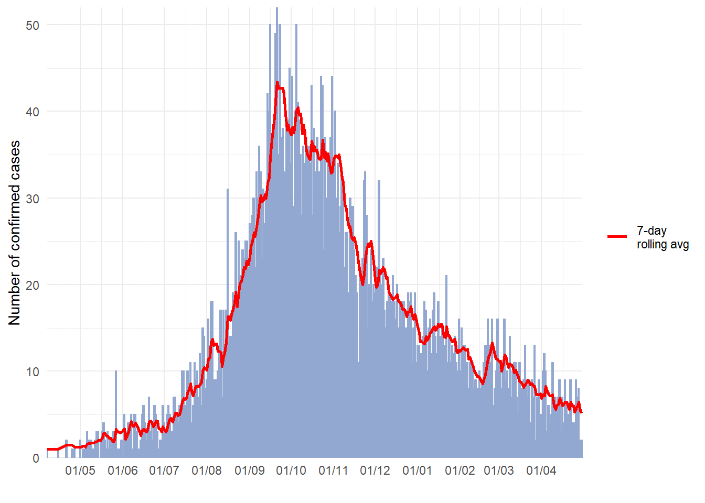
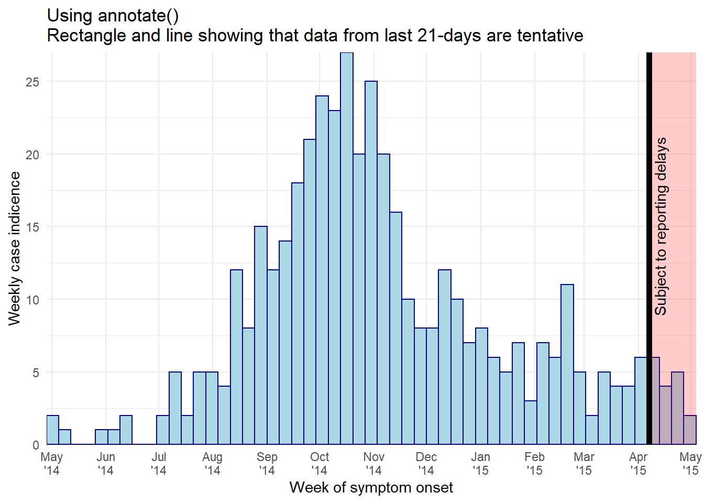

32 Đường cong dịch bệnh

Đường cong dịch bệnh (còn được gọi là “đường cong epi”) là một biểu đồ dịch tễ học cốt lõi thường được sử dụng để trực quan xu hướng khởi phát bệnh theo thời gian trong một cụm hoặc nhóm ca bệnh.
Phân tích đường cong dịch bệnh có thể cho biết xu hướng theo thời gian, giá trị ngoại lai, mức độ bùng phát dịch, khoảng thời gian có khả năng bị phơi nhiễm cao nhất, khoảng thời gian giữa các thế hệ ca bệnh và thậm chí có thể giúp xác định phương thức lây truyền của một căn bệnh không xác định (ví dụ: điểm bắt nguồn, nguồn tiếp diễn phổ biến, lây truyền từ người sang người). Bạn có thể tìm thấy một bài học trực tuyến về giải thích các đường cong dịch bệnh tại trang web của CDC Hoa Kỳ.
Trong chương này, chúng tôi trình bày hai cách tiếp cận để tạo ra đường cong dịch bệnh trong R:
- Package incidence2, có thể tạo ra đường cong dịch bệnh với các lệnh đơn giản
- Package ggplot2, cho phép khả năng tùy chỉnh nâng cao thông qua các lệnh phức tạp hơn
Chúng tôi cũng sẽ giải quyết các trường hợp cụ thể như:
- Lập biểu đồ dữ liệu đếm tổng hợp
- Faceting hoặc tạo nhiều cấu phần nhỏ
- Áp dụng đường trung bình động
- Hiển thị dữ liệu “dự kiến” hoặc có thể bị chậm trễ trong báo cáo
- Thêm tỷ lệ ca nhiễm mới tích lũy bằng cách sử dụng trục thứ hai
32.1 Chuẩn bị
Packages
Đoạn code này hiển thị cách gọi các package cần thiết cho các phân tích. Trong cuốn sách này, chúng tôi nhấn mạnh đến hàm p_load() từ package pacman, sẽ cài đặt package nếu cần và gọi package để sử dụng. Bạn cũng có thể cài đặt package với hàm library() từ base R. Xem chương R cơ bản để biết thêm thông tin về các package trong R.
pacman::p_load(
rio, # file import/export
here, # relative filepaths
lubridate, # working with dates/epiweeks
aweek, # alternative package for working with dates/epiweeks
incidence2, # epicurves of linelist data
i2extras, # supplement to incidence2
stringr, # search and manipulate character strings
forcats, # working with factors
RColorBrewer, # Color palettes from colorbrewer2.org
tidyverse # data management + ggplot2 graphics
) Nhập dữ liệu
Hai bộ dữ liệu mẫu được sử dụng trong chương này:
- Bộ số liệu
linelistvề các ca bệnh từ một vụ dịch mô phỏng
- Số lượng tổng hợp theo bệnh viện từ cùng một dịch bệnh mô phỏng bên trên
Các bộ dữ liệu được nhập bằng hàm import() từ package rio. Xem chương Nhập xuất dữ liệu để biết các cách nhập dữ liệu khác nhau.
Bộ số liệu linelist
Chúng ta nhập bộ dữ liệu về các ca bệnh mô phỏng từ một vụ dịch Ebola. Nếu bạn muốn tải xuống dữ liệu để làm theo từng bước, hãy xem hướng dẫn trong chương Tải sách và dữ liệu. Chúng tôi giả sử các tệp tin nằm trong thư mục làm việc nên không có thư mục con nào được chỉ định trong đường dẫn này.
50 dòng đầu tiên được hiển thị như bên dưới:
Số lượng ca bệnh do bệnh viện tổng hợp
Theo mục tiêu của cuốn sách này, bộ dữ liệu về số lượng tổng hợp hàng tuần theo bệnh viện được tạo từ linelist với đoạn code sau.
# import the counts data into R
count_data <- linelist %>%
group_by(hospital, date_hospitalisation) %>%
summarize(n_cases = dplyr::n()) %>%
filter(date_hospitalisation > as.Date("2013-06-01")) %>%
ungroup()50 dòng đầu tiên được hiển thị như bên dưới:
Thiết lập các tham số
Để tạo báo cáo, bạn có thể muốn thiết lập các thông số có thể chỉnh sửa, chẳng hạn như ngày dữ liệu hiện tại (“ngày dữ liệu”). Sau đó, bạn có thể tham chiếu đối tượng data_date trong code khi áp dụng bộ lọc hoặc trong chú thích động.
Xác minh ngày
Xác minh rằng mỗi cột ngày có liên quan là phân lớp Ngày và có phạm vi giá trị thích hợp. Bạn có thể thực hiện việc này đơn giản bằng cách sử dụng hàm hist() cho histogram hoặc hàm range() với na.rm=TRUE, hoặc với hàm ggplot() như bên dưới.
32.2 Đường cong dịch bệnh với ggplot2
Sử dụng ggplot() để xây dựng đường cong dịch bệnh cho phép sự linh hoạt và tùy chỉnh nhiều hơn, nhưng đòi hỏi nhiều nỗ lực và hiểu biết hơn về sử dụng ggplot().
Không giống như sử dụng package incidence2, bạn phải kiểm soát thủ công việc tổng hợp các trường hợp theo thời gian (theo tuần, tháng, v.v.) và khoảng thời gian của các nhãn trên trục ngày thág. Việc này phải được quản lý rất cẩn thận.
Các ví dụ này sử dụng một tập con của bộ dữ liệu linelist - chỉ các trường hợp từ Central Hospital.
Để tạo ra một đường cong dịch bệnh với ggplot(), có ba yếu tố chính:
- Một histogram, với các ca bệnh
linelistđược tổng hợp thành các “bins” được phân biệt bằng các điểm “ngắt” cụ thể
- Cân chỉnh các trục và nhãn
- Chủ đề của biểu đồ, bao gồm tiêu đề, nhãn, chú thích, v.v.
Xác định bins của số liệu
Ở đây chúng ta trình bày cách xác định các ca bệnh sẽ được tổng hợp thành các bins của một histogram (“cột”). Điều quan trọng cần nhận ra là việc tổng hợp số ca bệnh thành các bins của một histogram không nhất thiết phải có cùng khoảng với thời gian xuất hiện trên trục x.
Dưới đây có lẽ là đoạn code đơn giản nhất để tạo ra các đường cong dịch bệnh hàng ngày và hàng tuần.
Trong lệnh ggplot() tổng quát, bộ dữ liệu được đưa vào data =. Trên nền tảng này, dạng hình học của histogram được thêm bằng một dấu +. Trong geom_histogram(), chúng ta ánh xạ các yếu tố thẩm mỹ sao cho cột date_onset được ánh xạ tới trục x. Cũng trong hàm geom_histogram() nhưng không phải trong đối số aes(), chúng ta đặt binwidth = bằng số bins của histogram, tính bằng ngày. Nếu cú pháp ggplot2 này khó hiểu, hãy xem lại chương ggplot cơ bản.
THẬN TRỌNG: Lập biểu đồ các trường hợp hàng tuần bằng cách sử dụng binwidth = 7 bắt đầu cột 7 ngày đầu tiên ở ca bệnh đầu tiên, mà có thể là bất kỳ ngày nào trong tuần! Để tạo các tuần cụ thể, hãy xem phần bên dưới.
# daily
ggplot(data = central_data) + # set data
geom_histogram( # add histogram
mapping = aes(x = date_onset), # map date column to x-axis
binwidth = 1)+ # cases binned by 1 day
labs(title = "Central Hospital - Daily") # title
# weekly
ggplot(data = central_data) + # set data
geom_histogram( # add histogram
mapping = aes(x = date_onset), # map date column to x-axis
binwidth = 7)+ # cases binned every 7 days, starting from first case (!)
labs(title = "Central Hospital - 7-day bins, starting at first case") # titleChúng tôi xin lưu ý rằng ca bệnh đầu tiên trong bộ dữ liệu của Central Hospital có triệu chứng khởi phát vào ngày:
## [1] "Thursday 01 May, 2014"Để chỉ định thủ công chia biểu đồ cột, không sử dụng argument binwidth = và thay vào đó cung cấp vectơ ngày để breaks =.
Tạo vectơ ngày tháng với hàm seq.Date() trong base R. Hàm này sử dụng các đối số to =, from =, và by =. Ví dụ: lệnh bên dưới trả về ngày mỗi tháng bắt đầu từ ngày 15 Tháng 1 và kết thúc trước ngày 28 Tháng 6.
monthly_breaks <- seq.Date(from = as.Date("2014-02-01"),
to = as.Date("2015-07-15"),
by = "months")
monthly_breaks # print## [1] "2014-02-01" "2014-03-01" "2014-04-01" "2014-05-01" "2014-06-01" "2014-07-01"
## [7] "2014-08-01" "2014-09-01" "2014-10-01" "2014-11-01" "2014-12-01" "2015-01-01"
## [13] "2015-02-01" "2015-03-01" "2015-04-01" "2015-05-01" "2015-06-01" "2015-07-01"Vectơ này có được cung cấp cho hàm geom_histogram() dưới dạng breaks =:
# monthly
ggplot(data = central_data) +
geom_histogram(
mapping = aes(x = date_onset),
breaks = monthly_breaks)+ # provide the pre-defined vector of breaks
labs(title = "Monthly case bins") # titleMột chuỗi ngày hàng tuần đơn giản có thể được trả về bằng cách đặt by = "week". Ví dụ:
Một giải pháp thay thế cho việc xác định ngày bắt đầu và ngày kết thúc cụ thể là viết code động để các cột hàng tuần bắt đầu vào thứ Hai trước ca đầu tiên. Chúng tôi sẽ sử dụng các vectơ ngày này trong suốt các ví dụ dưới đây.
# Sequence of weekly Monday dates for CENTRAL HOSPITAL
weekly_breaks_central <- seq.Date(
from = floor_date(min(central_data$date_onset, na.rm=T), "week", week_start = 1), # monday before first case
to = ceiling_date(max(central_data$date_onset, na.rm=T), "week", week_start = 1), # monday after last case
by = "week")Hãy giải mã đoạn code khá “khoai” ở trên:
- Giá trị “from” (ngày sớm nhất của chuỗi) được tạo như sau: giá trị ngày nhỏ nhất (
min()vớina.rm=TRUE) trong cộtdate_onsetđược đưa vào hàmfloor_date()thuộc package lubridate.floor_date()được đặt thành “tuần” trả về ngày bắt đầu của “tuần” của trường hợp đó, với điều kiện là ngày bắt đầu của mỗi tuần là Thứ Hai (week_start = 1).
- Tương tự như vậy, giá trị “to” (ngày kết thúc của chuỗi) được tạo bằng cách sử dụng hàm ngược lại
ceiling_date()để trả về thứ hai sau ca cuối cùng.
- Đối số “by” của
seq.Date()có thể được đặt thành bất kỳ số ngày, tuần hoặc tháng nào.
- Sử dụng
week_start = 7cho tuần bắt đầu vào Chủ nhật
Vì chúng ta sẽ sử dụng các vectơ ngày dạng này trong toàn bộ chương này, chúng ta cũng xác định một vectơ cho toàn bộ đợt bùng phát (ở trên chỉ dành cho Central Hospital).
# Sequence for the entire outbreak
weekly_breaks_all <- seq.Date(
from = floor_date(min(linelist$date_onset, na.rm=T), "week", week_start = 1), # monday before first case
to = ceiling_date(max(linelist$date_onset, na.rm=T), "week", week_start = 1), # monday after last case
by = "week")Các kết quả trả về của seq.Date() có thể được sử dụng để tạo các khoảng chia bins trong histogram, cũng như khoảng chia cho các nhãn ngày mà có thể độc lập với các bins. Đọc thêm về nhãn ngày trong các phần sau.
MẸO: Đối với lệnh ggplot() đơn giản hơn, hãy lưu các khoảng chia bins và khoảng chia nhãn ngày dưới dạng các vectơ đã đặt tên trước và gán tên này vào đối số breaks =.
Ví dụ về đường cong dịch bệnh theo tuần
Dưới đây là code ví dụ chi tiết để tạo đường cong dịch bệnh hàng tuần cho các tuần bắt đầu vào Thứ Hai, với các cột, nhãn ngày và đường lưới dọc đã được căn chỉnh. Phần này dành cho người dùng có nhu cầu code nhanh. Để hiểu sâu từng khía cạnh (chủ đề, nhãn ngày, v.v.), hãy tiếp tục xem các phần tiếp theo. Chú ý:
- Các đoạn chia bins của histogram được xác định bằng hàm
seq.Date()như được giải thích ở trên để bắt đầu vào thứ Hai trước ca sớm nhất và kết thúc vào thứ Hai sau ca cuối cùng
- Khoảng nhãn ngày được xác định bởi
date_breaks =bên trongscale_x_date()
- Khoảng đường lưới dọc nhỏ giữa các nhãn ngày được xác định bởi
date_minor_breaks =
expand = c(0,0)trong trục x và y loại bỏ không gian thừa trên mỗi cạnh của trục, điều này cũng đảm bảo các nhãn ngày bắt đầu từ cột đầu tiên.
# TOTAL MONDAY WEEK ALIGNMENT
#############################
# Define sequence of weekly breaks
weekly_breaks_central <- seq.Date(
from = floor_date(min(central_data$date_onset, na.rm=T), "week", week_start = 1), # Monday before first case
to = ceiling_date(max(central_data$date_onset, na.rm=T), "week", week_start = 1), # Monday after last case
by = "week") # bins are 7-days
ggplot(data = central_data) +
# make histogram: specify bin break points: starts the Monday before first case, end Monday after last case
geom_histogram(
# mapping aesthetics
mapping = aes(x = date_onset), # date column mapped to x-axis
# histogram bin breaks
breaks = weekly_breaks_central, # histogram bin breaks defined previously
# bars
color = "darkblue", # color of lines around bars
fill = "lightblue" # color of fill within bars
)+
# x-axis labels
scale_x_date(
expand = c(0,0), # remove excess x-axis space before and after case bars
date_breaks = "4 weeks", # date labels and major vertical gridlines appear every 3 Monday weeks
date_minor_breaks = "week", # minor vertical lines appear every Monday week
date_labels = "%a\n%d %b\n%Y")+ # date labels format
# y-axis
scale_y_continuous(
expand = c(0,0))+ # remove excess y-axis space below 0 (align histogram flush with x-axis)
# aesthetic themes
theme_minimal()+ # simplify plot background
theme(
plot.caption = element_text(hjust = 0, # caption on left side
face = "italic"), # caption in italics
axis.title = element_text(face = "bold"))+ # axis titles in bold
# labels including dynamic caption
labs(
title = "Weekly incidence of cases (Monday weeks)",
subtitle = "Note alignment of bars, vertical gridlines, and axis labels on Monday weeks",
x = "Week of symptom onset",
y = "Weekly incident cases reported",
caption = stringr::str_glue("n = {nrow(central_data)} from Central Hospital; Case onsets range from {format(min(central_data$date_onset, na.rm=T), format = '%a %d %b %Y')} to {format(max(central_data$date_onset, na.rm=T), format = '%a %d %b %Y')}\n{nrow(central_data %>% filter(is.na(date_onset)))} cases missing date of onset and not shown"))
Tuần bắt đầu bằng Chủ nhật
Để vẽ được biểu đồ cho các tuần bắt đầu bằng Chủ nhật, cần có một số sửa đổi, vì date_breaks = "weeks" chỉ hoạt động cho các tuần bắt đầu bằng thứ Hai.
- Các điểm ngắt của các histogram bins phải được đặt thành Chủ nhật (
week_start = 7)
- Trong
scale_x_date(), các đoạn ngắt ngày tương tự nên được gắn vớibreaks =vàminor_breaks =để đảm bảo các nhãn ngày và đường lưới dọc căn chỉnh vào ngày Chủ nhật.
Ví dụ: lệnh scale_x_date() cho các tuần bắt đầu vào Chủ nhật có thể trông như sau:
scale_x_date(
expand = c(0,0),
# specify interval of date labels and major vertical gridlines
breaks = seq.Date(
from = floor_date(min(central_data$date_onset, na.rm=T), "week", week_start = 7), # Sunday before first case
to = ceiling_date(max(central_data$date_onset, na.rm=T), "week", week_start = 7), # Sunday after last case
by = "4 weeks"),
# specify interval of minor vertical gridline
minor_breaks = seq.Date(
from = floor_date(min(central_data$date_onset, na.rm=T), "week", week_start = 7), # Sunday before first case
to = ceiling_date(max(central_data$date_onset, na.rm=T), "week", week_start = 7), # Sunday after last case
by = "week"),
# date label format
#date_labels = "%a\n%d %b\n%Y")+ # day, above month abbrev., above 2-digit year
label = scales::label_date_short()) # automatic label formattingNhóm/tô màu theo giá trị
Các cột histogram có thể được tô màu theo nhóm và “xếp chồng lên nhau”. Để chỉ định cột nhóm, hãy thực hiện các thay đổi sau. Xem chương ggplot cơ bản để biết thêm chi tiết.
- Bên trong đối số
aes()của hàm vẽ histogram, ánh xạ tên cột tới đối sốgroup =vàfill =
- Loại bỏ bất kỳ tham số
fill =nào bên ngoài đối sốaes(), vì nó sẽ ghi đè giá trị bên trong
- Đối số bên trong
aes()sẽ áp dụng theo nhóm, trong khi bất kỳ đối số bên ngoài nào đều sẽ áp dụng cho tất cả các cột (ví dụ: bạn có thể vẫn muốn tô màucolor =bên ngoài, vì vậy mỗi cột có cùng một đường viền)
Đây là lệnh aes() hiển thị nhóm và tô màu các cột theo giới tính:
Đây là kết quả khi áp dụng:
ggplot(data = linelist) + # begin with linelist (many hospitals)
# make histogram: specify bin break points: starts the Monday before first case, end Monday after last case
geom_histogram(
mapping = aes(
x = date_onset,
group = hospital, # set data to be grouped by hospital
fill = hospital), # bar fill (inside color) by hospital
# bin breaks are Monday weeks
breaks = weekly_breaks_all, # sequence of weekly Monday bin breaks for whole outbreak, defined in previous code
# Color around bars
color = "black")
Hiệu chỉnh màu
Để thiết lập thủ công tô màu cho từng nhóm, hãy sử dụng
scale_fill_manual()(lưu ý:scale_color_manual()là một cái khác!)- Sử dụng đối số
values =để áp dụng một vectơ màu
- Sử dụng
na.value =để xác định màu cho giá trịNA
- Sử dụng đối số
labels =để thay đổi văn bản trong mục chú thích. Để cho an toàn, sử dụng một vectơ được đặt tên kiểu nhưc("old" = "new", "old" = "new")hoặc điều chỉnh giá trị trong bộ dữ liệu
- Sử dụng
name =để đặt một tiêu đề thích hợp cho mục chú thích
- Sử dụng đối số
Để biết thêm mẹo về thang màu và bảng màu, hãy xem chương ggplot cơ bản.
ggplot(data = linelist)+ # begin with linelist (many hospitals)
# make histogram
geom_histogram(
mapping = aes(x = date_onset,
group = hospital, # cases grouped by hospital
fill = hospital), # bar fill by hospital
# bin breaks
breaks = weekly_breaks_all, # sequence of weekly Monday bin breaks, defined in previous code
# Color around bars
color = "black")+ # border color of each bar
# manual specification of colors
scale_fill_manual(
values = c("black", "orange", "grey", "beige", "blue", "brown"),
labels = c("St. Mark's Maternity Hospital (SMMH)" = "St. Mark's"),
name = "Hospital") # specify fill colors ("values") - attention to order!Hiệu chỉnh thứ bậc
Thứ tự mà các cột được nhóm xếp chồng lên nhau được điều chỉnh tốt nhất bằng cách phân loại cột nhóm dưới dạng Factor. Sau đó, bạn có thể chỉ định thứ tự cấp độ phân loại (và nhãn hiển thị của chúng). Xem chương về Factors hoặc Các tips với ggplot để biết thêm chi tiết.
Trước khi tạo biểu đồ, hãy sử dụng hàm fct_relevel() từ package forcats để chuyển đổi cột phân nhóm thành kiểu Factor và điều chỉnh thứ tự cấp độ theo cách thủ công, như được trình bày chi tiết trong chương về Factors.
# load forcats package for working with factors
pacman::p_load(forcats)
# Define new dataset with hospital as factor
plot_data <- linelist %>%
mutate(hospital = fct_relevel(hospital, c("Missing", "Other"))) # Convert to factor and set "Missing" and "Other" as top levels to appear on epicurve top
levels(plot_data$hospital) # print levels in order## [1] "Missing" "Other"
## [3] "Central Hospital" "Military Hospital"
## [5] "Port Hospital" "St. Mark's Maternity Hospital (SMMH)"Trong biểu đồ dưới đây, điểm khác biệt duy nhất so với trước đó là cột hospital đã được hợp nhất như trên và chúng ta sử dụng các guides() để đảo ngược thứ tự chú thích, do đó “nhãn Missing” nằm ở cuối chú thích.
ggplot(plot_data) + # Use NEW dataset with hospital as re-ordered factor
# make histogram
geom_histogram(
mapping = aes(x = date_onset,
group = hospital, # cases grouped by hospital
fill = hospital), # bar fill (color) by hospital
breaks = weekly_breaks_all, # sequence of weekly Monday bin breaks for whole outbreak, defined at top of ggplot section
color = "black")+ # border color around each bar
# x-axis labels
scale_x_date(
expand = c(0,0), # remove excess x-axis space before and after case bars
date_breaks = "3 weeks", # labels appear every 3 Monday weeks
date_minor_breaks = "week", # vertical lines appear every Monday week
label = scales::label_date_short()) + # efficient label formatting
# y-axis
scale_y_continuous(
expand = c(0,0))+ # remove excess y-axis space below 0
# manual specification of colors, ! attention to order
scale_fill_manual(
values = c("grey", "beige", "black", "orange", "blue", "brown"),
labels = c("St. Mark's Maternity Hospital (SMMH)" = "St. Mark's"),
name = "Hospital")+
# aesthetic themes
theme_minimal()+ # simplify plot background
theme(
plot.caption = element_text(face = "italic", # caption on left side in italics
hjust = 0),
axis.title = element_text(face = "bold"))+ # axis titles in bold
# labels
labs(
title = "Weekly incidence of cases by hospital",
subtitle = "Hospital as re-ordered factor",
x = "Week of symptom onset",
y = "Weekly cases")
MẸO: Để chỉ đảo ngược thứ tự của chú thích, hãy thêm lệnh ggplot2 này: guides(fill = guide_legend(reverse = TRUE)).
Hiệu chỉnh chú thích
Đọc thêm về chú thích và scale trong chương Các tips với ggplot. Dưới đây là một vài điểm nổi bật:
Chỉnh sửa tiêu đề chú thích trong hàm scale hoặc với
labs(fill = "Legend title")(nếu bạn đang sử dụngcolor =, thì hãy sử dụnglabs(color = ""))
theme(legend.title = element_blank())để bỏ trống tiêu đề chú thích
theme(legend.position = "top")(“bottom”, “left”, “right”, hoặc “none” để bỏ chú thích)theme(legend.direction = "horizontal")xoay ngang chú thíchguides(fill = guide_legend(reverse = TRUE))để đảo ngược thứ tự các mục chú thích
Cột kề cột
Hiển thị song song các cột nhóm (trái ngược với xếp chồng lên nhau) được chỉ định trong geom_histogram() với position = "dodge" được đặt bên ngoài aes().
Nếu có nhiều hơn hai nhóm giá trị, nó có thể gây khó đọc. Thay vào đó, hãy cân nhắc sử dụng một biểu đồ được chia nhỏ (gồm nhiều biểu đồ nhỏ). Để dễ xem trong ví dụ này, các giá trị giới tính bị thiếu sẽ bị xóa.
ggplot(central_data %>% drop_na(gender))+ # begin with Central Hospital cases dropping missing gender
geom_histogram(
mapping = aes(
x = date_onset,
group = gender, # cases grouped by gender
fill = gender), # bars filled by gender
# histogram bin breaks
breaks = weekly_breaks_central, # sequence of weekly dates for Central outbreak - defined at top of ggplot section
color = "black", # bar edge color
position = "dodge")+ # SIDE-BY-SIDE bars
# The labels on the x-axis
scale_x_date(expand = c(0,0), # remove excess x-axis space below and after case bars
date_breaks = "3 weeks", # labels appear every 3 Monday weeks
date_minor_breaks = "week", # vertical lines appear every Monday week
label = scales::label_date_short())+ # efficient date labels
# y-axis
scale_y_continuous(expand = c(0,0))+ # removes excess y-axis space between bottom of bars and the labels
#scale of colors and legend labels
scale_fill_manual(values = c("brown", "orange"), # specify fill colors ("values") - attention to order!
na.value = "grey" )+
# aesthetic themes
theme_minimal()+ # a set of themes to simplify plot
theme(plot.caption = element_text(face = "italic", hjust = 0), # caption on left side in italics
axis.title = element_text(face = "bold"))+ # axis titles in bold
# labels
labs(title = "Weekly incidence of cases, by gender",
subtitle = "Subtitle",
fill = "Gender", # provide new title for legend
x = "Week of symptom onset",
y = "Weekly incident cases reported")
Giới hạn trục
Có hai cách để giới hạn phạm vi các giá trị trên trục.
Nói chung, cách khuyến khích sử dụng là lệnh coord_cartesian(), chấp nhận xlim = c(min, max) và ylim = c(min, max) (trong đó bạn cung cấp giá trị nhỏ nhất và lớn nhất). Cách này hoạt động như một “thu phóng kích thước” mà không thực sự loại bỏ bất kỳ dữ liệu nào, điều này rất quan trọng đối với các số liệu thống kê và các thang đo tổng hợp.
Ngoài ra, bạn có thể thiết lập giá trị ngày tối đa và tối thiểu bằng cách sử dụng limits = c() bên trong hàm scale_x_date(). Ví dụ:
scale_x_date(limits = c(as.Date("2014-04-01"), NA)) # sets a minimum date but leaves the maximum open. Tương tự như vậy, nếu bạn muốn trục x kéo dài đến một ngày cụ thể (ví dụ: ngày hiện tại), ngay cả khi không có trường hợp mới nào được báo cáo, bạn có thể sử dụng:
LƯU Ý: Hãy thận trọng khi đặt giới hạn hoặc chia tỷ lệ trục y (ví dụ: 0 đến 30 với khoảng là 5: seq(0, 30, 5)). Những con số tĩnh như vậy có thể cắt bớt biểu đồ quá ngắn nếu dữ liệu thay đổi vượt quá giới hạn!.
Nhãn/đường lưới của trục ngày
MẸO: Hãy nhớ rằng các nhãn trục ngày độc lập với việc tổng hợp dữ liệu thành các cột, nhưng về mặt trực quan, điều quan trọng là phải căn chỉnh các cột, nhãn ngày và các đường lưới dọc.
Để sửa đổi nhãn ngày và đường lưới, hãy sử dụng scale_x_date() theo một trong những cách sau:
Nếu histogram bins là ngày, tuần bắt đầu vào thứ hai, tháng hoặc năm:
- Sử dụng
date_breaks =để xác định khoảng thời gian của các nhãn và đường lưới chính (ví dụ: “day”, “week”, “3 weeks”, “month” hoặc “year”) - Sử dụng
date_minor_breaks =để xác định khoảng của các đường lưới dọc nhỏ (giữa các nhãn ngày)
- Thêm
expand = c(0,0)để bắt đầu các nhãn ở cột đầu tiên
- Sử dụng
date_labels =để xác định định dạng của nhãn ngày - hãy xem chương Ngày để biết các mẹo (sử dụng\ncho một dòng mới)
- Sử dụng
Nếu histogram bins là các tuần bắt đầu vào Chủ nhật:
- Sử dụng
breaks =vàminor_breaks =bằng cách cung cấp một chuỗi ngày cho mỗi khoảng chia - Vẫn có thể sử dụng
date_labels =vàexpand =để định dạng như mô tả ở trên
- Sử dụng
Một số ghi chú:
- Xem phần mở đầu của mục ggplot về hướng dẫn cách tạo chuỗi ngày bằng
seq.Date().
- Xem trang này hoặc chương Làm việc với ngày tháng để biết thêm mẹo tạo nhãn ngày.
Minh họa
Dưới đây là minh họa biểu đồ trong đó các cột và nhãn biểu đồ/đường lưới được căn chỉnh thẳng hàng và không thẳng hàng:
# 7-day bins + Monday labels
#############################
ggplot(central_data) +
geom_histogram(
mapping = aes(x = date_onset),
binwidth = 7, # 7-day bins with start at first case
color = "darkblue",
fill = "lightblue") +
scale_x_date(
expand = c(0,0), # remove excess x-axis space below and after case bars
date_breaks = "3 weeks", # Monday every 3 weeks
date_minor_breaks = "week", # Monday weeks
label = scales::label_date_short())+ # automatic label formatting
scale_y_continuous(
expand = c(0,0))+ # remove excess space under x-axis, make flush
labs(
title = "MISALIGNED",
subtitle = "! CAUTION: 7-day bars start Thursdays at first case\nDate labels and gridlines on Mondays\nNote how ticks don't align with bars")
# 7-day bins + Months
#####################
ggplot(central_data) +
geom_histogram(
mapping = aes(x = date_onset),
binwidth = 7,
color = "darkblue",
fill = "lightblue") +
scale_x_date(
expand = c(0,0), # remove excess x-axis space below and after case bars
date_breaks = "months", # 1st of month
date_minor_breaks = "week", # Monday weeks
label = scales::label_date_short())+ # automatic label formatting
scale_y_continuous(
expand = c(0,0))+ # remove excess space under x-axis, make flush
labs(
title = "MISALIGNED",
subtitle = "! CAUTION: 7-day bars start Thursdays with first case\nMajor gridlines and date labels at 1st of each month\nMinor gridlines weekly on Mondays\nNote uneven spacing of some gridlines and ticks unaligned with bars")
# TOTAL MONDAY ALIGNMENT: specify manual bin breaks to be mondays
#################################################################
ggplot(central_data) +
geom_histogram(
mapping = aes(x = date_onset),
# histogram breaks set to 7 days beginning Monday before first case
breaks = weekly_breaks_central, # defined earlier in this page
color = "darkblue",
fill = "lightblue") +
scale_x_date(
expand = c(0,0), # remove excess x-axis space below and after case bars
date_breaks = "4 weeks", # Monday every 4 weeks
date_minor_breaks = "week", # Monday weeks
label = scales::label_date_short())+ # label formatting
scale_y_continuous(
expand = c(0,0))+ # remove excess space under x-axis, make flush
labs(
title = "ALIGNED Mondays",
subtitle = "7-day bins manually set to begin Monday before first case (28 Apr)\nDate labels and gridlines on Mondays as well")
# TOTAL MONDAY ALIGNMENT WITH MONTHS LABELS:
############################################
ggplot(central_data) +
geom_histogram(
mapping = aes(x = date_onset),
# histogram breaks set to 7 days beginning Monday before first case
breaks = weekly_breaks_central, # defined earlier in this page
color = "darkblue",
fill = "lightblue") +
scale_x_date(
expand = c(0,0), # remove excess x-axis space below and after case bars
date_breaks = "months", # Monday every 4 weeks
date_minor_breaks = "week", # Monday weeks
label = scales::label_date_short())+ # label formatting
scale_y_continuous(
expand = c(0,0))+ # remove excess space under x-axis, make flush
theme(panel.grid.major = element_blank())+ # Remove major gridlines (fall on 1st of month)
labs(
title = "ALIGNED Mondays with MONTHLY labels",
subtitle = "7-day bins manually set to begin Monday before first case (28 Apr)\nDate labels on 1st of Month\nMonthly major gridlines removed")
# TOTAL SUNDAY ALIGNMENT: specify manual bin breaks AND labels to be Sundays
############################################################################
ggplot(central_data) +
geom_histogram(
mapping = aes(x = date_onset),
# histogram breaks set to 7 days beginning Sunday before first case
breaks = seq.Date(from = floor_date(min(central_data$date_onset, na.rm=T), "week", week_start = 7),
to = ceiling_date(max(central_data$date_onset, na.rm=T), "week", week_start = 7),
by = "7 days"),
color = "darkblue",
fill = "lightblue") +
scale_x_date(
expand = c(0,0),
# date label breaks and major gridlines set to every 3 weeks beginning Sunday before first case
breaks = seq.Date(from = floor_date(min(central_data$date_onset, na.rm=T), "week", week_start = 7),
to = ceiling_date(max(central_data$date_onset, na.rm=T), "week", week_start = 7),
by = "3 weeks"),
# minor gridlines set to weekly beginning Sunday before first case
minor_breaks = seq.Date(from = floor_date(min(central_data$date_onset, na.rm=T), "week", week_start = 7),
to = ceiling_date(max(central_data$date_onset, na.rm=T), "week", week_start = 7),
by = "7 days"),
label = scales::label_date_short())+ # label formatting
scale_y_continuous(
expand = c(0,0))+ # remove excess space under x-axis, make flush
labs(title = "ALIGNED Sundays",
subtitle = "7-day bins manually set to begin Sunday before first case (27 Apr)\nDate labels and gridlines manually set to Sundays as well")


Dữ liệu tổng hợp
Thông thường, thay vì bắt đầu với bộ số liệu linelist, bạn có thể bắt đầu với số lượng tổng hợp từ các cơ sở y tế, quận, huyện, v.v. Bạn có thể tạo đường cong dịch bệnh với ggplot() nhưng code sẽ hơi khác một chút. Phần này sẽ tận dụng bộ dữ liệu count_data đã được nạp trước đó trong mục chuẩn bị dữ liệu. Bộ dữ liệu này là linelist được tổng hợp thành số lượng bệnh viện theo ngày. 50 hàng đầu tiên được hiển thị dưới đây.
Vẽ biểu đồ dữ liệu đếm hàng ngày
Chúng ta có thể vẽ biểu đồ đường cong dịch bệnh từ dữ liệu đếm hàng ngày. Dưới đây là sự khác biệt trong đoạn code:
Khi ánh xạ các yếu tố trong hàm
aes(), hãy cụ thểy =bằng một cột đếm (trong trường hợp này, tên cột làn_cases)Thêm đối số
stat = "identity"tronggeom_histogram(), giúp xác định rằng chiều cao cột phải là giá trịy =, không phải số hàng như mặc định
Thêm đối số
width =để tránh các đường trắng dọc giữa các cột. Đối với dữ liệu hàng ngày được đặt thành 1. Đối với dữ liệu đếm hàng tuần được đặt thành 7. Đối với dữ liệu đếm hàng tháng, các đường màu trắng là một vấn đề (mỗi tháng có số ngày khác nhau) - hãy xem xét chuyển đổi trục x của bạn thành cột phân loại (factor) theo thứ tự (tháng) và sử dụnggeom_col().
ggplot(data = count_data)+
geom_histogram(
mapping = aes(x = date_hospitalisation, y = n_cases),
stat = "identity",
width = 1)+ # for daily counts, set width = 1 to avoid white space between bars
labs(
x = "Date of report",
y = "Number of cases",
title = "Daily case incidence, from daily count data")
Vẽ biểu đồ dữ liệu đếm hàng tuần
Nếu dữ liệu của bạn đã là số lượng ca bệnh đếm theo tuần, chúng có thể trông giống như bộ dữ liệu này (được gọi là count_data_weekly):
50 hàng đầu tiên của count_data_weekly được hiển thị bên dưới. Bạn có thể thấy rằng số lượng đếm đã được tổng hợp thành các tuần. Mỗi tuần được hiển thị theo ngày đầu tiên của tuần (mặc định là Thứ Hai).
Bây giờ vẽ biểu đồ sao cho x = cột epiweek. Hãy nhớ thêm y = cột đếm khi ánh xạ trục và thêm stat = "identity" như đã giải thích ở trên.
ggplot(data = count_data_weekly)+
geom_histogram(
mapping = aes(
x = epiweek, # x-axis is epiweek (as class Date)
y = n_cases_weekly, # y-axis height in the weekly case counts
group = hospital, # we are grouping the bars and coloring by hospital
fill = hospital),
stat = "identity")+ # this is also required when plotting count data
# labels for x-axis
scale_x_date(
date_breaks = "2 months", # labels every 2 months
date_minor_breaks = "1 month", # gridlines every month
label = scales::label_date_short())+ # label formatting
# Choose color palette (uses RColorBrewer package)
scale_fill_brewer(palette = "Pastel2")+
theme_minimal()+
labs(
x = "Week of onset",
y = "Weekly case incidence",
fill = "Hospital",
title = "Weekly case incidence, from aggregated count data by hospital")
Đường trung bình động
Xem chương về Đường trung bình động để có mô tả chi tiết và một số tùy chọn. Dưới đây là một tùy chọn để tính toán đường trung bình động với package slider. Theo cách tiếp cận này, trung bình động được tính toán trong bộ dữ liệu trước khi vẽ biểu đồ:
- Tổng hợp dữ liệu thành số lượng nếu cần thiết (hàng ngày, hàng tuần, v.v.) (xem chương Nhóm dữ liệu)
- Tạo một cột mới để giữ đường trung bình động, được tạo bằng hàm
slide_index()từ package slider
- Vẽ đường trung bình động dưới dạng một
geom_line()ở trên đỉnh (phía sau) histogram đường cong dịch bệnh
Tham khảo thêm tại vignette của package slider
# load package
pacman::p_load(slider) # slider used to calculate rolling averages
# make dataset of daily counts and 7-day moving average
#######################################################
ll_counts_7day <- linelist %>% # begin with linelist
## count cases by date
count(date_onset, name = "new_cases") %>% # name new column with counts as "new_cases"
drop_na(date_onset) %>% # remove cases with missing date_onset
## calculate the average number of cases in 7-day window
mutate(
avg_7day = slider::slide_index( # create new column
new_cases, # calculate based on value in new_cases column
.i = date_onset, # index is date_onset col, so non-present dates are included in window
.f = ~mean(.x, na.rm = TRUE), # function is mean() with missing values removed
.before = 6, # window is the day and 6-days before
.complete = FALSE), # must be FALSE for unlist() to work in next step
avg_7day = unlist(avg_7day)) # convert class list to class numeric
# plot
######
ggplot(data = ll_counts_7day) + # begin with new dataset defined above
geom_histogram( # create epicurve histogram
mapping = aes(
x = date_onset, # date column as x-axis
y = new_cases), # height is number of daily new cases
stat = "identity", # height is y value
fill="#92a8d1", # cool color for bars
colour = "#92a8d1", # same color for bar border
)+
geom_line( # make line for rolling average
mapping = aes(
x = date_onset, # date column for x-axis
y = avg_7day, # y-value set to rolling average column
lty = "7-day \nrolling avg"), # name of line in legend
color="red", # color of line
size = 1) + # width of line
scale_x_date( # date scale
date_breaks = "1 month",
label = scales::label_date_short(), # label formatting
expand = c(0,0)) +
scale_y_continuous( # y-axis scale
expand = c(0,0),
limits = c(0, NA)) +
labs(
x="",
y ="Number of confirmed cases",
fill = "Legend")+
theme_minimal()+
theme(legend.title = element_blank()) # removes title of legend
Faceting/chia nhỏ biểu đồ
Như với các ggplots khác, bạn có thể tạo các biểu đồ được chia nhỏ (“nhiều biểu đồ con”). Như đã giải thích trong chương Các tips với ggplot trong cuốn sách này, bạn có thể sử dụng facet_wrap() hoặc facet_grid(). Ở đây chúng tôi sẽ minh họa bằng hàm facet_wrap(). Đối với đường cong dịch bệnh, sử dụng facet_wrap() thường dễ dàng hơn vì khả năng bạn thường chỉ cần chia nhỏ biểu đồ theo một biến.
Cú pháp chung là facet_wrap(rows ~ cols), trong đó bên trái dấu ngã (~) là tên của biến sẽ được trải trên các “hàng” của biểu đồ chia nhỏ và ở bên phải dấu ngã là tên của biến sẽ được trải trên các “cột” của biểu đồ chia nhỏ. Đơn giản nhất, chỉ cần sử dụng một tên cột, ở bên phải dấu ngã: facet_wrap(~age_cat).
Trục tự do
Bạn sẽ cần phải quyết định xem tỷ lệ của các trục cho mỗi biểu đồ nhỏ là “cố định” với cùng một kích thước (mặc định) hay “tự do” (nghĩa là chúng sẽ thay đổi dựa trên dữ liệu của chúng). Thực hiện điều này với đối số scales = trong hàm facet_wrap() bằng cách chỉ định “free_x” hoặc “free_y” hoặc “free”.
Số cột và hàng của các biểu đồ con
Điều này có thể xác định với ncol = và nrow = trong hàm facet_wrap().
Thứ tự các biểu đồ con
Để thay đổi thứ tự xuất hiện, hãy thay đổi thứ tự cơ bản của các cấp của cột phân loại được sử dụng để tạo các biểu đồ con.
Đinh dạng trục
Kích thước phông chữ và mặt biểu đồ, dải màu, v.v. có thể được sửa đổi thông qua theme() với các đối số như:
strip.text = element_text()(kích thước, màu sắc, mặt, góc …)strip.background = element_rect()(ví dụ:element_rect(fill = "grey"))
strip.position =(vị trị “dưới”, “trên”, “trái”, hoặc “phải”)
Dải nhãn
Nhãn của các biểu đồ con có thể được sửa đổi thông qua “nhãn” của cột như một factor hoặc bằng cách sử dụng một “người dán nhãn - labeller”.
Để tạo một labeller như thế, sử dụng hàm as_labeller() từ ggplot2. Sau đó, cung cấp labeller cho đối số labeller = của facet_wrap() như dưới đây.
my_labels <- as_labeller(c(
"0-4" = "Ages 0-4",
"5-9" = "Ages 5-9",
"10-14" = "Ages 10-14",
"15-19" = "Ages 15-19",
"20-29" = "Ages 20-29",
"30-49" = "Ages 30-49",
"50-69" = "Ages 50-69",
"70+" = "Over age 70"))Một ví dụ về chia nhỏ biểu đồ - chia bằng cột age_cat.
# make plot
###########
ggplot(central_data) +
geom_histogram(
mapping = aes(
x = date_onset,
group = age_cat,
fill = age_cat), # arguments inside aes() apply by group
color = "black", # arguments outside aes() apply to all data
# histogram breaks
breaks = weekly_breaks_central)+ # pre-defined date vector (see earlier in this page)
# The labels on the x-axis
scale_x_date(
expand = c(0,0), # remove excess x-axis space below and after case bars
date_breaks = "2 months", # labels appear every 2 months
date_minor_breaks = "1 month", # vertical lines appear every 1 month
label = scales::label_date_short())+ # label formatting
# y-axis
scale_y_continuous(expand = c(0,0))+ # removes excess y-axis space between bottom of bars and the labels
# aesthetic themes
theme_minimal()+ # a set of themes to simplify plot
theme(
plot.caption = element_text(face = "italic", hjust = 0), # caption on left side in italics
axis.title = element_text(face = "bold"),
legend.position = "bottom",
strip.text = element_text(face = "bold", size = 10),
strip.background = element_rect(fill = "grey"))+ # axis titles in bold
# create facets
facet_wrap(
~age_cat,
ncol = 4,
strip.position = "top",
labeller = my_labels)+
# labels
labs(
title = "Weekly incidence of cases, by age category",
subtitle = "Subtitle",
fill = "Age category", # provide new title for legend
x = "Week of symptom onset",
y = "Weekly incident cases reported",
caption = stringr::str_glue("n = {nrow(central_data)} from Central Hospital; Case onsets range from {format(min(central_data$date_onset, na.rm=T), format = '%a %d %b %Y')} to {format(max(central_data$date_onset, na.rm=T), format = '%a %d %b %Y')}\n{nrow(central_data %>% filter(is.na(date_onset)))} cases missing date of onset and not shown"))Xem link để biết thêm thông tin về labellers.
Tổng vụ dịch trong nền của biểu đồ con
Để hiển thị tổng vụ dịch trong nền của mỗi biểu đồ con, hãy thêm hàm gghighlight() với dấu ngoặc đơn trống vào ggplot. Hàm này thuộc package gghighlight. Lưu ý rằng trục y tối đa trong tất cả các biểu đồ con hiện dựa vào đỉnh của toàn bộ vụ dịch. Có nhiều ví dụ hơn về package này trong chương Các tips với ggplot.
ggplot(central_data) +
# epicurves by group
geom_histogram(
mapping = aes(
x = date_onset,
group = age_cat,
fill = age_cat), # arguments inside aes() apply by group
color = "black", # arguments outside aes() apply to all data
# histogram breaks
breaks = weekly_breaks_central)+ # pre-defined date vector (see top of ggplot section)
# add grey epidemic in background to each facet
gghighlight::gghighlight()+
# labels on x-axis
scale_x_date(
expand = c(0,0), # remove excess x-axis space below and after case bars
date_breaks = "2 months", # labels appear every 2 months
date_minor_breaks = "1 month", # vertical lines appear every 1 month
label = scales::label_date_short())+ # label formatting
# y-axis
scale_y_continuous(expand = c(0,0))+ # removes excess y-axis space below 0
# aesthetic themes
theme_minimal()+ # a set of themes to simplify plot
theme(
plot.caption = element_text(face = "italic", hjust = 0), # caption on left side in italics
axis.title = element_text(face = "bold"),
legend.position = "bottom",
strip.text = element_text(face = "bold", size = 10),
strip.background = element_rect(fill = "white"))+ # axis titles in bold
# create facets
facet_wrap(
~age_cat, # each plot is one value of age_cat
ncol = 4, # number of columns
strip.position = "top", # position of the facet title/strip
labeller = my_labels)+ # labeller defines above
# labels
labs(
title = "Weekly incidence of cases, by age category",
subtitle = "Subtitle",
fill = "Age category", # provide new title for legend
x = "Week of symptom onset",
y = "Weekly incident cases reported",
caption = stringr::str_glue("n = {nrow(central_data)} from Central Hospital; Case onsets range from {format(min(central_data$date_onset, na.rm=T), format = '%a %d %b %Y')} to {format(max(central_data$date_onset, na.rm=T), format = '%a %d %b %Y')}\n{nrow(central_data %>% filter(is.na(date_onset)))} cases missing date of onset and not shown"))
Dữ liệu một biểu đồ con
Nếu bạn muốn có một hộp biểu đồ con chứa tất cả dữ liệu, hãy sao chép toàn bộ dữ liệu và coi các bản sao như một giá trị cho các biểu đồ con. Hàm “trợ giúp” CreateAllFacet() bên dưới có thể hỗ trợ việc này (nhờ bài đăng trên blog này). Khi nó được chạy, số hàng tăng gấp đôi và sẽ có một cột mới được gọi là facet, trong đó các hàng được sao chép sẽ có giá trị “tất cả” và các hàng ban đầu có giá trị ban đầu của cột phân chia. Bây giờ bạn chỉ cần phân chia cột facet .
Dưới đây là hàm trợ giúp. Chạy code này và nó sẽ luôn sẵn sàng để bạn sử dụng.
# Define helper function
CreateAllFacet <- function(df, col){
df$facet <- df[[col]]
temp <- df
temp$facet <- "all"
merged <-rbind(temp, df)
# ensure the facet value is a factor
merged[[col]] <- as.factor(merged[[col]])
return(merged)
}Bây giờ hãy áp dụng hàm trợ giúp cho bộ dữ liệu, trên cột age_cat:
# Create dataset that is duplicated and with new column "facet" to show "all" age categories as another facet level
central_data2 <- CreateAllFacet(central_data, col = "age_cat") %>%
# set factor levels
mutate(facet = fct_relevel(facet, "all", "0-4", "5-9",
"10-14", "15-19", "20-29",
"30-49", "50-69", "70+"))## Warning: There was 1 warning in `mutate()`.
## ℹ In argument: `facet = fct_relevel(...)`.
## Caused by warning:
## ! 1 unknown level in `f`: 70+##
## all 0-4 5-9 10-14 15-19 20-29 30-49 50-69 <NA>
## 454 84 84 82 58 73 57 7 9Những thay đổi đáng chú ý đối với lệnh ggplot() là:
Dữ liệu được sử dụng bây giờ là
central_data2(nhân đôi các hàng, với cột mới là “facet”)Labeller sẽ cần được cập nhật, nếu được sử dụng
Tùy chọn: để có các biểu đồ con xếp chồng lên nhau theo chiều dọc: cột chia được chuyển sang các hàng bên cạnh của phương trình và ở bên phải được thay thế bằng “.” (
facet_wrap(facet~.)), vàncol = 1. Bạn cũng có thể cần điều chỉnh chiều rộng và chiều cao của ảnh biểu đồ đã lưu dưới dạng png (xemggsave()trong chương Các tips với ggplot).
ggplot(central_data2) +
# actual epicurves by group
geom_histogram(
mapping = aes(
x = date_onset,
group = age_cat,
fill = age_cat), # arguments inside aes() apply by group
color = "black", # arguments outside aes() apply to all data
# histogram breaks
breaks = weekly_breaks_central)+ # pre-defined date vector (see top of ggplot section)
# Labels on x-axis
scale_x_date(
expand = c(0,0), # remove excess x-axis space below and after case bars
date_breaks = "2 months", # labels appear every 2 months
date_minor_breaks = "1 month", # vertical lines appear every 1 month
label = scales::label_date_short())+ # label formatting
# y-axis
scale_y_continuous(expand = c(0,0))+ # removes excess y-axis space between bottom of bars and the labels
# aesthetic themes
theme_minimal()+ # a set of themes to simplify plot
theme(
plot.caption = element_text(face = "italic", hjust = 0), # caption on left side in italics
axis.title = element_text(face = "bold"),
legend.position = "bottom")+
# create facets
facet_wrap(facet~. , # each plot is one value of facet
ncol = 1)+
# labels
labs(title = "Weekly incidence of cases, by age category",
subtitle = "Subtitle",
fill = "Age category", # provide new title for legend
x = "Week of symptom onset",
y = "Weekly incident cases reported",
caption = stringr::str_glue("n = {nrow(central_data)} from Central Hospital; Case onsets range from {format(min(central_data$date_onset, na.rm=T), format = '%a %d %b %Y')} to {format(max(central_data$date_onset, na.rm=T), format = '%a %d %b %Y')}\n{nrow(central_data %>% filter(is.na(date_onset)))} cases missing date of onset and not shown"))32.3 Dữ liệu dự kiến
Dữ liệu gần đây nhất được biểu thị trong đường cong dịch tễ nên được đánh dấu là dự kiến hoặc có thể báo cáo chậm trễ. Điều này có thể được thực hiện bằng cách thêm một đường thẳng đứng và/hoặc hình chữ nhật trong một số ngày cụ thể. Đây là hai tùy chọn:
Sử dụng
annotate():- Để sử dụng dạng đường
annotate(geom = "segment"). Cung cấpx,xend,y, vàyend. Hiệu chỉnh kích thước, kiểu dòng (lty), và màu.
- Để sử dụng dạng hình chữ nhật
annotate(geom = "rect"). Cung cấp xmin/xmax/ymin/ymax. Hiệu chỉnh màu và hệ số alpha.
- Để sử dụng dạng đường
Nhóm dữ liệu theo trạng thái tạm thời và tô màu các cột đó theo cách khác nhau
THẬN TRỌNG: Bạn có thể thử hàm geom_rect() để vẽ hình chữ nhật, nhưng việc điều chỉnh độ trong suốt không khả thi trong bối cảnh cảnh bộ số liệu linelist. Hàm này sẽ phủ lên một hình chữ nhật cho mỗi hàng/quan sát!. Sử dụng hệ số alpha rất thấp (ví dụ: 0.01) hoặc một cách tiếp cận khác.
Sử dụng annotate()
- Trong
annotate(geom = "rect"), đối sốxminvàxmaxcần được định dạng phân lớp ngày
- Lưu ý rằng vì những dữ liệu này được tổng hợp thành các cột hàng tuần và cột cuối cùng kéo dài đến Thứ Hai sau điểm dữ liệu cuối cùng, vùng được tô bóng có thể bao gồm 4 tuần
- Đây là một ví dụ trực tuyến về
annotate()
ggplot(central_data) +
# histogram
geom_histogram(
mapping = aes(x = date_onset),
breaks = weekly_breaks_central, # pre-defined date vector - see top of ggplot section
color = "darkblue",
fill = "lightblue") +
# scales
scale_y_continuous(expand = c(0,0))+
scale_x_date(
expand = c(0,0), # remove excess x-axis space below and after case bars
date_breaks = "1 month", # 1st of month
date_minor_breaks = "1 month", # 1st of month
label = scales::label_date_short())+ # automatic label formatting
# labels and theme
labs(
title = "Using annotate()\nRectangle and line showing that data from last 21-days are tentative",
x = "Week of symptom onset",
y = "Weekly case indicence")+
theme_minimal()+
# add semi-transparent red rectangle to tentative data
annotate(
"rect",
xmin = as.Date(max(central_data$date_onset, na.rm = T) - 21), # note must be wrapped in as.Date()
xmax = as.Date(Inf), # note must be wrapped in as.Date()
ymin = 0,
ymax = Inf,
alpha = 0.2, # alpha easy and intuitive to adjust using annotate()
fill = "red")+
# add black vertical line on top of other layers
annotate(
"segment",
x = max(central_data$date_onset, na.rm = T) - 21, # 21 days before last data
xend = max(central_data$date_onset, na.rm = T) - 21,
y = 0, # line begins at y = 0
yend = Inf, # line to top of plot
size = 2, # line size
color = "black",
lty = "solid")+ # linetype e.g. "solid", "dashed"
# add text in rectangle
annotate(
"text",
x = max(central_data$date_onset, na.rm = T) - 15,
y = 15,
label = "Subject to reporting delays",
angle = 90)
Đường thẳng đứng màu đen có thể tạo ra với code bên dưới, nhưng sử dụng geom_vline(), bạn sẽ mất khả năng kiểm soát chiều cao:
Màu cột
Một cách tiếp cận thay thế có thể là điều chỉnh màu sắc hoặc cách hiển thị của chính các cột dữ liệu dự kiến. Bạn có thể tạo một cột mới trong giai đoạn chuẩn bị dữ liệu và sử dụng cột đó để nhóm dữ liệu, sao cho aes(fill = ) của dữ liệu tạm thời có thể có màu hoặc hệ số alpha khác với các cột khác.
# add column
############
plot_data <- central_data %>%
mutate(tentative = case_when(
date_onset >= max(date_onset, na.rm=T) - 7 ~ "Tentative", # tenative if in last 7 days
TRUE ~ "Reliable")) # all else reliable
# plot
######
ggplot(plot_data, aes(x = date_onset, fill = tentative)) +
# histogram
geom_histogram(
breaks = weekly_breaks_central, # pre-defined data vector, see top of ggplot page
color = "black") +
# scales
scale_y_continuous(expand = c(0,0))+
scale_fill_manual(values = c("lightblue", "grey"))+
scale_x_date(
expand = c(0,0), # remove excess x-axis space below and after case bars
date_breaks = "3 weeks", # Monday every 3 weeks
date_minor_breaks = "week", # Monday weeks
label = scales::label_date_short())+ # label formatting
# labels and theme
labs(title = "Show days that are tentative reporting",
subtitle = "")+
theme_minimal()+
theme(legend.title = element_blank()) # remove title of legend
32.4 Nhãn ngày nhiều cấp độ
Nếu bạn muốn phân nhiều cấp nhãn ngày (ví dụ: tháng và năm) mà không sao chép các cấp nhãn cấp độ thấp hơn, hãy xem xét một trong các cách tiếp cận bên dưới:
Hãy nhớ rằng - bạn có thể sử dụng các công cụ như \n trong các đối số date_labels hoặc labels để đặt các phần của mỗi nhãn trên một dòng mới bên dưới. Tuy nhiên, đoạn code dưới đây giúp bạn thực hiện nhiều năm hoặc tháng (ví dụ) ở dòng thấp hơn và chỉ một lần. Một số lưu ý về code bên dưới:
- Số lượng ca bệnh được tổng hợp thành các tuần vì lý do thẩm mỹ. Xem chương Đường cong dịch bệnh (tab dữ liệu tổng hợp) để biết chi tiết.
- Một miền
geom_area()được sử dụng thay vì một histogram, vì phương pháp tiếp cận chia biểu đồ dưới đây không hoạt động tốt với histogram.
Tổng hợp dữ đếm hàng tuần
# Create dataset of case counts by week
#######################################
central_weekly <- linelist %>%
filter(hospital == "Central Hospital") %>% # filter linelist
mutate(week = lubridate::floor_date(date_onset, unit = "weeks")) %>%
count(week) %>% # summarize weekly case counts
drop_na(week) %>% # remove cases with missing onset_date
complete( # fill-in all weeks with no cases reported
week = seq.Date(
from = min(week),
to = max(week),
by = "week"),
fill = list(n = 0)) # convert new NA values to 0 countsVẽ biểu đồ
# plot with box border on year
##############################
ggplot(central_weekly) +
geom_area(aes(x = week, y = n), # make line, specify x and y
stat = "identity") + # because line height is count number
scale_x_date(date_labels="%b", # date label format show month
date_breaks="month", # date labels on 1st of each month
expand=c(0,0)) + # remove excess space on each end
scale_y_continuous(
expand = c(0,0))+ # remove excess space below x-axis
facet_grid(~lubridate::year(week), # facet on year (of Date class column)
space="free_x",
scales="free_x", # x-axes adapt to data range (not "fixed")
switch="x") + # facet labels (year) on bottom
theme_bw() +
theme(strip.placement = "outside", # facet labels placement
strip.background = element_rect(fill = NA, # facet labels no fill grey border
colour = "grey50"),
panel.spacing = unit(0, "cm"))+ # no space between facet panels
labs(title = "Nested year labels, grey label border")# plot with no box border on year
#################################
ggplot(central_weekly,
aes(x = week, y = n)) + # establish x and y for entire plot
geom_line(stat = "identity", # make line, line height is count number
color = "#69b3a2") + # line color
geom_point(size=1, color="#69b3a2") + # make points at the weekly data points
geom_area(fill = "#69b3a2", # fill area below line
alpha = 0.4)+ # fill transparency
scale_x_date(date_labels="%b", # date label format show month
date_breaks="month", # date labels on 1st of each month
expand=c(0,0)) + # remove excess space
scale_y_continuous(
expand = c(0,0))+ # remove excess space below x-axis
facet_grid(~lubridate::year(week), # facet on year (of Date class column)
space="free_x",
scales="free_x", # x-axes adapt to data range (not "fixed")
switch="x") + # facet labels (year) on bottom
theme_bw() +
theme(strip.placement = "outside", # facet label placement
strip.background = element_blank(), # no facet lable background
panel.grid.minor.x = element_blank(),
panel.border = element_rect(colour="grey40"), # grey border to facet PANEL
panel.spacing=unit(0,"cm"))+ # No space between facet panels
labs(title = "Nested year labels - points, shaded, no label border")Các kỹ thuật trên được điều chỉnh từ đây và bài đăng này trên stackoverflow.com.
32.5 Trục kép
Mặc dù có những cuộc thảo luận gay gắt về tính hợp lệ của trục kép trong cộng đồng về trực quan hóa dữ liệu, nhiều chuyên gia dịch tễ vẫn muốn nhìn nhận biểu đồ đường cong dịch bệnh hoặc biểu đồ tương tự với phần trăm trên trục thứ hai. Điều này được thảo luận nhiều hơn trong chương Các tips với ggplot, nhưng một ví dụ sử dụng phương pháp cowplot được trình bày bên dưới:
- Hai biểu đồ riêng biệt được tạo, và sau đó được kết hợp với package cowplot.
- Các biểu đồ phải có chính xác cùng trục x (đã đặt giới hạn), nếu không dữ liệu và nhãn sẽ không được căn chỉnh phù hợp
- Mỗi biểu đồ sử dụng
theme_cowplot()và một biểu đồ có trục y được di chuyển sang phía bên phải của biểu đồ
#load package
pacman::p_load(cowplot)
# Make first plot of epicurve histogram
#######################################
plot_cases <- linelist %>%
# plot cases per week
ggplot()+
# create histogram
geom_histogram(
mapping = aes(x = date_onset),
# bin breaks every week beginning monday before first case, going to monday after last case
breaks = weekly_breaks_all)+ # pre-defined vector of weekly dates (see top of ggplot section)
# specify beginning and end of date axis to align with other plot
scale_x_date(
limits = c(min(weekly_breaks_all), max(weekly_breaks_all)))+ # min/max of the pre-defined weekly breaks of histogram
# labels
labs(
y = "Daily cases",
x = "Date of symptom onset"
)+
theme_cowplot()
# make second plot of percent died per week
###########################################
plot_deaths <- linelist %>% # begin with linelist
group_by(week = floor_date(date_onset, "week")) %>% # create week column
# summarise to get weekly percent of cases who died
summarise(n_cases = n(),
died = sum(outcome == "Death", na.rm=T),
pct_died = 100*died/n_cases) %>%
# begin plot
ggplot()+
# line of weekly percent who died
geom_line( # create line of percent died
mapping = aes(x = week, y = pct_died), # specify y-height as pct_died column
stat = "identity", # set line height to the value in pct_death column, not the number of rows (which is default)
size = 2,
color = "black")+
# Same date-axis limits as the other plot - perfect alignment
scale_x_date(
limits = c(min(weekly_breaks_all), max(weekly_breaks_all)))+ # min/max of the pre-defined weekly breaks of histogram
# y-axis adjustments
scale_y_continuous( # adjust y-axis
breaks = seq(0,100, 10), # set break intervals of percent axis
limits = c(0, 100), # set extent of percent axis
position = "right")+ # move percent axis to the right
# Y-axis label, no x-axis label
labs(x = "",
y = "Percent deceased")+ # percent axis label
theme_cowplot() # add this to make the two plots merge together nicelyBây giờ sử dụng cowplot để chồng lên hai biểu đồ. Sự chú ý đã được tập trung vào việc căn chỉnh trục x, cạnh của trục y và việc sử dụng theme_cowplot().
aligned_plots <- cowplot::align_plots(plot_cases, plot_deaths, align="hv", axis="tblr")
ggdraw(aligned_plots[[1]]) + draw_plot(aligned_plots[[2]])
32.6 Số mới mắc tích lũy
Lưu ý: Nếu sử dụng incidence2, hãy xem chương về cách bạn có thể tính số mới mắc tích lũy bằng một hàm đơn giản. Chương này sẽ đề cập đến cách tính số mới mắc tích lũy và vẽ biểu đồ bằng ggplot().
Nếu bắt đầu bằng bộ số liệu linelist, hãy tạo một cột mới chứa số ca bệnh tích lũy mỗi ngày trong đợt bùng phát bằng cách sử dụng cumsum() từ base R:
cumulative_case_counts <- linelist %>%
count(date_onset) %>% # count of rows per day (returned in column "n")
mutate(
cumulative_cases = cumsum(n) # new column of the cumulative number of rows at each date
)10 hàng đầu tiên được hiển thị bên dưới:
Sau đó, cột tích lũy này có thể được vẽ dựa trên date_onset, sử dụng geom_line():
plot_cumulative <- ggplot()+
geom_line(
data = cumulative_case_counts,
aes(x = date_onset, y = cumulative_cases),
size = 2,
color = "blue")
plot_cumulative
Nó cũng có thể được phủ đè lên đường cong dịch bệnh, với trục kép bằng cách sử dụng phương pháp cowplot được mô tả ở trên và trong chương Các tips với ggplot:
#load package
pacman::p_load(cowplot)
# Make first plot of epicurve histogram
plot_cases <- ggplot()+
geom_histogram(
data = linelist,
aes(x = date_onset),
binwidth = 1)+
labs(
y = "Daily cases",
x = "Date of symptom onset"
)+
theme_cowplot()
# make second plot of cumulative cases line
plot_cumulative <- ggplot()+
geom_line(
data = cumulative_case_counts,
aes(x = date_onset, y = cumulative_cases),
size = 2,
color = "blue")+
scale_y_continuous(
position = "right")+
labs(x = "",
y = "Cumulative cases")+
theme_cowplot()+
theme(
axis.line.x = element_blank(),
axis.text.x = element_blank(),
axis.title.x = element_blank(),
axis.ticks = element_blank())Bây giờ sử dụng cowplot để chồng lên hai biểu đồ. Sự chú ý đã được tập trung vào việc căn chỉnh trục x, cạnh của trục y và việc sử dụng theme_cowplot().
aligned_plots <- cowplot::align_plots(plot_cases, plot_cumulative, align="hv", axis="tblr")
ggdraw(aligned_plots[[1]]) + draw_plot(aligned_plots[[2]])